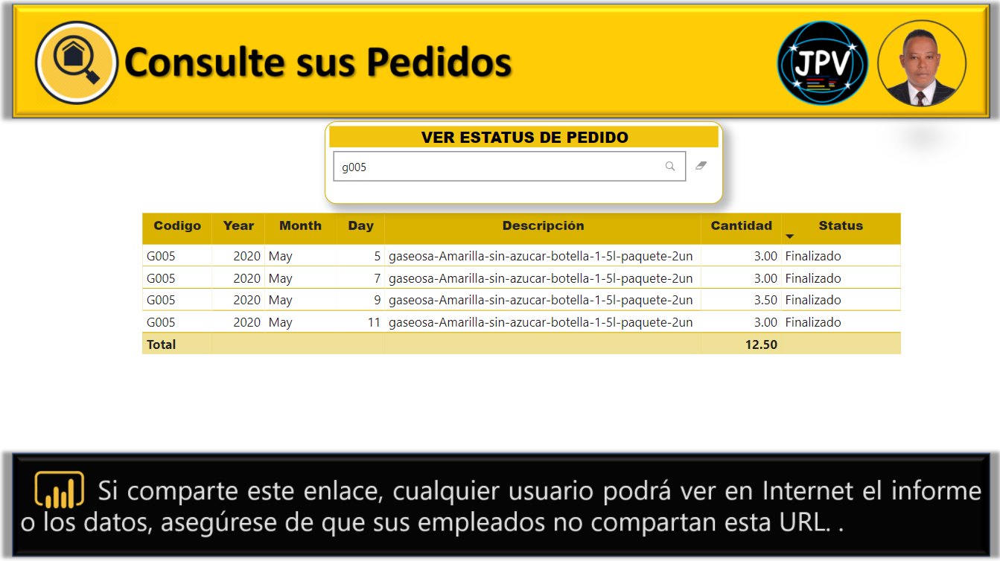

😀 ¡Hola, bienvenidos!, Mi nombre es
Juancito Peña V..
Soy un entusiasta de las Tecnologías y del Análisis de Datos, con experiencia de más de 10 Años trabajando con sistemas orientados a procesos
tecnológicos, administrativos, productivos y de marketing. Creo 100% en las Tecnologías, y los aportes a las mejoras
Productivas, de Negocios y de Educación que brindan. Me considero una persona Multidisciplaria, con
Capacidad Analítica, Comunicación efectiva, Perseverancia y un alto Grado de Resiliencia.
Mi educacion ha estado ligada a la Tecnología, soy graduado de Ingenieria en Sistemas y Computación, con una Especialidad en Desarrollo de Software, y
una Maestría en Sistemas Mención Gerencial . Mis Habilidades van desde el uso Avanzado de Herramientas BI, como (Excel, SQL Server, Power BI, Crystal Report) hasta nivels basicos de
desarrollo con Tecnologías como (C#, HTML, CSS, JavaScript, Wordpress, Balsamiq, Figma). Tengo Experiencia en implementaciones con
integraciones de software y aplicaciones móviles para ventas, Almacen, distribución, generación de Reportes y Creacion de Dashboard
para Business Intelligence para la toma de desiciones, desde el problema, los requerimientos hasta el lanzamiento,
testing y entrenamiento del personal. Logrando los objetivos y las metas planteadas.
Has click en el enlace para Ver mi CV Completo.

Microsoft Power BI es un servicio de análisis empresarial de Microsoft, su objetivo es proporcionar visualizaciones interactivas y capacidades de inteligencia empresarial con una interfaz lo suficientemente simple como para que los usuarios finales creen sus propios informes y paneles, en él podemos usar técnicas como ETL (Extraer, Transformar y Cargar) y crear un excelente Modelo de Datos, con una gran cantidad de información desde (Bases de Datos, tablas, relaciones, tipos de Datos, Filas, registros, Medidas, Nuevas Tablas, y Cálculos con el lenguaje DAX).
Modificar y tranformar los datos con el Editor de Consultas Power Query, Leer cualquier Archivo y Formato desde (CSV, .xls, pdf, .txt, etc), y Poder Cargar y Conéctese directamente a cientos de orígenes de datos locales y en la nube, como (Dynamics 365, Azure SQL Database, Salesforce, Excel , SharePoint, Sitios Web, Redes Sociales, etc.), para crear visualizaciones o dashboards con gráficos dinámicos e interactivos, con paneles que agilizan la toma de decisiones en las Empresas.), poder publicarlo y compartirlo con tu equipo de trabajo y públicamente si lo deseas.
Power BI, Líder en el Cuadrante Mágico de Gartner: Año tras año, Microsoft se ha situado en el podio del Cuadrante Mágico de Gartner, y este año 2021 no es la excepción, Microsoft suma, con este, catorce años consecutivos como líder entre las herramientas de Big Data e Inteligencia de negocio. Siendo Power BI en sus pocos mas de 8 años quein encabeza la Lista de Lideres del Mercado cada año.
Microsoft Power BI es uno de los programas con tecnologías de Business Intelligence más robusto en el mercado, y al mismo tiempo es uno de los más baratos ¡incluso gratuito! Cualquiera puede iniciar a desarrollar reportes con visualizaciones interactivas gratis. Si eres dueño de un negocio, gerente de un departamento, o simplemente tienes interés en analizar y dar seguimiento a tus actividades y objetivos, entonces esta Herramienta es para ti.
‚úÖüîç Click en Imagen
📊 Análisis de Ventas Ubicacion Mapa
Analisis de Ventas por ciudad y region, tipo de Compra, con Indicadores, Venta Total, Utilidad, Margen, Inventario, Slicer, Tooltips, etc.
Autor: Ing. Juancito Peña.
📊 Precios de Crypto CoinGecko API V3-(Angular)

Uso de la API de criptomonedas más completa. Pagina Creada con Angular, y Subida a GitHub de Forma Gratuita. Las 100 principales monedas según la capitalización de mercado.
Autor: Ing. Juancito Peña. Ejemplo Canal de Fazt Web
📊 Precios de Crypto CoinGecko API V3-(Power BI)

Uso de la API de criptomonedas más completa, en Power Bi. Las 100 principales monedas según la capitalización de mercado.
Autor: Ing. Juancito Peña. Ejemplo Canal de Fazt Web
📊 Análisis de Franquicia en Taquillas Star Wars

Análisis de la Franquicia Presupuestos, Recaudacion, Ganacias, Portada de la Pelicula, Director, con Datos de Diferentes Fuentes, como: Wikipedia, Google, y Creacion de Modelo en SQL Server, etc.
Autor: Ing. Juancito Peña
📊 ANALISIS DE VENTAS POR PRODUCTOS ABC
Dashboard donde se analizar varios datos como las ventas,acumuladas por productos ABC, inidcadores y Tooltips).
Autor: Ing. Juancito Peña
📊 ANALISIS DE VENTAS, CATALOGO DE PRODUCTOS,COBROS, CLIENTES ABC
Dashboard donde se analizar varios datos como las ventas, los margenes, las regiones, los productos, vendedores, clientes, cobros, clientes ABC, top, etc.).
Autor: Ing. Juancito Peña
📊 ANALISIS DE ESCENARIOS CASO HOTELES

Análisis de Escenarios, una herramienta utilizada en Power BI (What-If), p[ara analizar diferentes escenarios y casos de uso, aqui lo vemos en uncaso de hotel..
Autor: Ing. Juancito Peña
📊 SITUACION DEL COVID-19-Y VACUNACION

Dashboard Situacion del Covid-19 y la Vacunacion a Nivel Mundial por paises...
Autor: Ing. Juancito Peña
📊INDICADORES EN POWER BI, USO DE ZEBRA, BULLETCHAT, DISTRIBUTION, ETC.
Un indicador es una señal del estado de un dato, en Power BI contamos con una gama muy alta de objetos visuales que nos permiten identificar, medir, aclarar y tomar decisiones acerca de lo sucedido con la información .
Autor: Ing. Juancito Peña
📊 CATALOGO DE PRODUCTOS ONLINE PARA VENDEDORES

Los catálogos digitales de productos están pensados para que se puedan presentar los productos de forma muy visual, un Ejemplo Secillo para que un Vendedor lo tenga en su Dispositivo.
Autor: Ing. Juancito Peña
📊 CONULTAS E PEDIDOS ONLINE CON CLAVES DE CLIENTRS
Dashboard para Consultar clientes y estatus de pedidos, donde el cliente tiene una cuenta y una clave para acceder a verificar sus pedidos y sus estatus solo de el.
Autor: Ing. Juancito Peña
📊 DASHBOARD DE VENTAS SERVICIOS TECNOLOGICOS DARK AL 2019

Dashboard de ventas, con diseño Dark muestra productos, categoría, y región..
Autor: Ing. Juancito Peña
📊 SISTEMA DE TICKETS SERVICOS TECNLOGICOS TRACTCHUN

Tractchun es una compañía de la industria manufacturera que cuenta con agentes de Tecnologías de la Información TI (quienes dan soporte a Tickets para todo lo referente a sus tecnologías de oficinas (Aplicaciones, Hardware, Software y SO, etc).
Autor: Ing. Juancito Peña- Curso Javir Gomez
📊 DASHBOARD VENTAS DE PRODUCTOS TECNOLOGICOS
Dashboard de ventas de productos, por linea, tipo de cliente, gastos, ingresos, margenes, etc., etc. .
Autor: Ing. Juancito Peña
📊 DASHBOARD DE VENTAS SKU-DON
Dashboard de ventas, con diseño Dark muestra productos, categoría, y región..
Autor: Ing. Juancito Peña- Curso Javier Gomez
📊 DASHBOARD DE VENTAS DARK

Dashboard de ventas, con Diseño Dark, pero muy interesante, analizando ventas, categoría, región, y año .
Autor: Ing. Juancito Peña
📊 ANALISIS DE VENTAS, REGION
Dashboard de ventas con mapa interactivo, por región, por productos. .
Autor: Ing. Juancito Peña
📊 DASHBOARD DE FINANZAS

Dashboard de Finanzas con Análisis Compartivos por Año, y Mes anterior, Por País, Por Segomento Ckientes, Por Marcas, Margenes y Beneficios, etc..
Autor: Ing. Juancito Peña y Javier Gomez
📊 DASHBOARD DE ENCUESTA
Dashboard de Encuesta, a clientes de un Bar, por genero, Estado civil, Frencuencia de Visistas., etc.
Autor: Ing. Juancito Peña y Javier Gomez
📊 ESTADISTICAS CANAL YOUTUBE
Dashboard de Estadisticas de Youtube, Visitas, Me Gustas, Reproducción, etc.
Autor: Ing. Juancito Peña
📊 Poblacion Mundial
Poblacion Mundial por Area, Indicadores Mortalidad Infantil, y esperanza de Vida por Region.
Autor: Ing. Juancito Peña - Curso Javier Gomez
📊 VENTAS DE VIDEO JUEGOS 1980-2017
Dashboard de Ventas de Video Juegos desde el 1980 al 2017, por región, marca, género plataforma, editorial, etc.
Autor: Ing. Juancito Peña.
📊 ANALISIS FINANCIERO PERSONAL

Dashboard de Estadisticas personales de gastos, lista de gasto e ingresos, etc..
Autor: Ing. Juancito Peña- Curso Javier Gomez
📊 ANALISIS DE UTILIDAD Y MARGEN

Dashboard de ventas, utilidades y margenes por país. .
Autor: Ing. Juancito Peña
📊 ANALISIS TITULOS DE NETFLIX 2000-2020

Dashboard de Analísis y Dashboard Titulos de Netflix 2000-2020, Películas, Shows, y Séries.
Autor: Javier Gomez, y Juancito Peña
📊 DASHBOARD DE VENTAS
Dashboard de ventas, con diseño sencillo, pero muy interesante, analizando ventas, vendedor, región, y año .
Autor: Ing. Juancito Peña
📊 DASHBOARD DE VENTAS RETO POWER BI
Dashboard de ventas, con Diseño sencillo, pero muy interesante, analizando ventas, vendedor, región, y año .
Autor: Diego Lopez, Carlos Bérgamo, y Juancito Peña
📊 DASHBOARD DE VENTAS BASICO

Dashboard de ventas, de software, por región, vendedores, etc..
Autor: Ing. Juancito Peña
📊 DASHBOARD DE PRODUCCION

Dashboard de producción por mes, entregas, devoluciones por mes, por gerente, prioridad, tipo de envio, etc.
Autor: Ing. Juancito Peña y Javier Gomez
📊 VENTAS DASHBORDEANDO

Dashboard de ingresos, analiza las ventas por género, región, línea de productos, clientes, y pagos, etc.
Autor: Ing. Juancito Peña y Javier Gomez
📉 ANALISIS DE INGRESS Y COMPARATIVAS CON DAX A√ëOS ANTERIORES

Analisis de Ingresos con Formulas Dax, Ingresos por País, por productos, categorías, períodos, y slicer emergentes. etc..
Autor: Ing. Juancito Peña y Javier Gomez
📈 MAPA DE VENTAS POR REGION, CIUDAD y VENDEDOR

Dashboard de ventas, por región, ciudad, vendedor,y productos.
Autor: Ing. Juancito Peña
📊 DASHBOARD CARTERA CLIENTES Y CUENTAS POR COBRAR

Dashboard de Cobros de Facturas, cartera, vencimientos de facturas, por clientes, etc. .
Autor: Ing. Juancito Peña
📊 DASHBOARD DE INGRESOS POR VENTAS

Dashboard de ventas, con Diseño sencillo, pero muy interesante, analizando ventas, vendedor, región, y año .
Autor: Ing. Juancito Peña
📈 DASHBOARD ANALISIS DE RECURSOS HUMANOS Y EMPLEADS

Analisis de Empleos y Contrataciones y Bajas en Tempos de Covid-19
Autor: Ing. Juancito Peña
📊 DASHBOARD PRESUPUESTO DE VENTAS
Dashboard de Cobros de Facturas, cartera, vencimientos de facturas, por clientes, etc. .
Autor: Ing. Juancito Peña
Te Ayudo A Solucionar Problemas con tus Datos, a Transformarlos en Soluciones y oportunidades, Si necesitas mi ayuda con algún Proyecto de Base de Datos (SQL Server, MySQL, PostgreSQL)a crear vistas, y Procedimientos, trigger, a crear un Modelo Funcional (Estrella o Copo de Nieves), ETL, Reportes con Cristal Report y un Dashboard o Informe , que necesites llevar a cabo, personal o profesionalmente, contáctame, buscame y sígueme en mis Redes Sociales